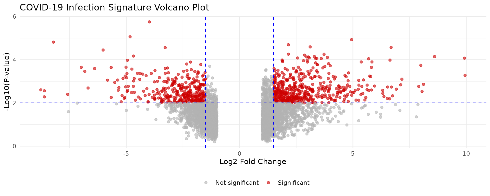
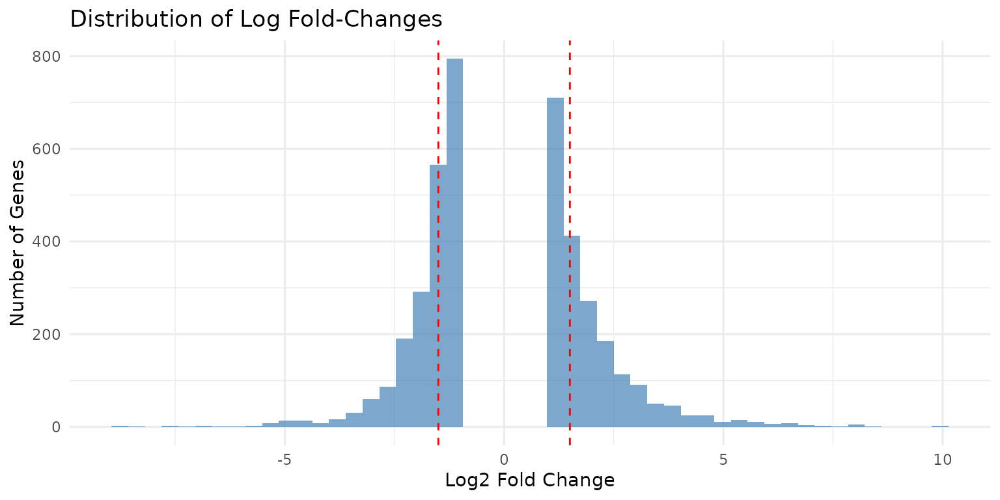

Drug Repurposing from Transcriptomic Data
Ali Sajid Imami
2026-08-10
Source:vignettes/drug-repurposing.Rmd
drug-repurposing.RmdIntroduction
Drug repurposing (also called drug repositioning) is the process of identifying new therapeutic uses for existing drugs. This approach offers several advantages over traditional drug discovery:
- Reduced development time: Existing drugs have known safety profiles
- Lower costs: Skip early-stage development and toxicity testing
- Higher success rates: Known pharmacokinetics and pharmacodynamics
- Rapid clinical translation: Faster path to patient benefit
This vignette demonstrates how to use drugfindR to identify candidate repurposable drugs from transcriptomic signatures of disease states.
The Drug Repurposing Workflow
The typical workflow involves:
- Obtain disease signature: Differential expression analysis from disease vs. control
- Prepare signature: Format for iLINCS compatibility
- Filter genes: Select most differentially expressed genes
- Query iLINCS: Find drugs with opposing signatures (anti-correlated)
- Rank candidates: Prioritize based on similarity scores
- Validate: Literature review, experimental validation
Case Study: COVID-19 Drug Repurposing
We’ll use a published COVID-19 transcriptomic signature to demonstrate the workflow. This example replicates aspects of the analysis from O’Donovan et al. (2021).
Step 1: Load Disease Signature
# Load pre-computed differential expression results
covid_file <- system.file("extdata", "dCovid_diffexp.tsv", package = "drugfindR")
covid_diffexp <- read_tsv(covid_file, show_col_types = FALSE)
# Examine the data structure
cat("Dimensions:", nrow(covid_diffexp), "genes x", ncol(covid_diffexp), "columns\n")
#> Dimensions: 4090 genes x 3 columns
head(covid_diffexp)
#> # A tibble: 6 × 3
#> hgnc_symbol logFC PValue
#> <chr> <dbl> <dbl>
#> 1 CCL4L2 -3.98 0.00000177
#> 2 IL5RA -4.83 0.00000870
#> 3 FN1 4.94 0.0000117
#> 4 GSTM1 -8.21 0.0000153
#> 5 CD180 2.15 0.0000202
#> 6 FAM20C 3.11 0.0000255This dataset contains differential expression results from SARS-CoV-2 infected cells:
- hgnc_symbol: HGNC gene symbols
- logFC: Log2 fold-change (infected vs. control)
- PValue: Statistical significance
Step 2: Visualize the Signature
Understanding your signature helps inform filtering decisions.
# Volcano plot
ggplot(covid_diffexp, aes(x = logFC, y = -log10(PValue))) +
geom_point(aes(color = abs(logFC) > 1.5 & PValue < 0.01),
alpha = 0.6, size = 1.5
) +
scale_color_manual(
values = c("gray70", "red3"),
labels = c("Not significant", "Significant"),
name = ""
) +
geom_vline(xintercept = c(-1.5, 1.5), linetype = "dashed", color = "blue") +
geom_hline(yintercept = -log10(0.01), linetype = "dashed", color = "blue") +
labs(
title = "COVID-19 Infection Signature Volcano Plot",
x = "Log2 Fold Change",
y = "-Log10(P-value)"
) +
theme_minimal() +
theme(legend.position = "bottom")
# Distribution of log fold-changes
ggplot(covid_diffexp, aes(x = logFC)) +
geom_histogram(bins = 50, fill = "steelblue", alpha = 0.7) +
geom_vline(xintercept = c(-1.5, 1.5), linetype = "dashed", color = "red") +
labs(
title = "Distribution of Log Fold-Changes",
x = "Log2 Fold Change",
y = "Number of Genes"
) +
theme_minimal()
Step 3: Choose Filtering Strategy
Strategy A: Absolute Threshold
Select genes with large magnitude changes:
# Prepare signature for iLINCS
signature <- prepareSignature(
covid_diffexp,
geneColumn = "hgnc_symbol",
logfcColumn = "logFC",
pvalColumn = "PValue"
)
cat("Signature prepared with", nrow(signature), "L1000 genes\n")
#> Signature prepared with 170 L1000 genes
# Filter with symmetric threshold
filtered_threshold <- filterSignature(signature, threshold = 1.5)
cat("Genes with |logFC| >= 1.5:", nrow(filtered_threshold), "\n")
#> Genes with |logFC| >= 1.5: 87
# Separate by direction
up_genes <- filterSignature(signature, direction = "up", threshold = 1.5)
down_genes <- filterSignature(signature, direction = "down", threshold = 1.5)
cat("Upregulated (>= 1.5):", nrow(up_genes), "\n")
#> Upregulated (>= 1.5): 72
cat("Downregulated (<= -1.5):", nrow(down_genes), "\n")
#> Downregulated (<= -1.5): 15Strategy B: Proportional Threshold
Select a fixed percentage of most extreme genes:
# Top and bottom 5% most differentially expressed
filtered_prop <- filterSignature(signature, prop = 0.05)
cat("Top/bottom 5%:", nrow(filtered_prop), "genes\n")
#> Top/bottom 5%: 18 genes
# Compare strategies
cat("\nComparing strategies:\n")
#>
#> Comparing strategies:
cat("Absolute threshold (1.5):", nrow(filtered_threshold), "genes\n")
#> Absolute threshold (1.5): 87 genes
cat("Proportional (5%):", nrow(filtered_prop), "genes\n")
#> Proportional (5%): 18 genesStrategy C: Asymmetric Threshold
Different thresholds for up and down regulation:
# More stringent for upregulation
filtered_asym <- filterSignature(signature, threshold = c(-1.0, 2.0))
cat(
"Asymmetric filtering (down <= -1.0, up >= 2.0):",
nrow(filtered_asym), "genes\n"
)
#> Asymmetric filtering (down <= -1.0, up >= 2.0): 73 genesStep 4: Query iLINCS for Concordant Drugs
# Query Chemical Perturbagen library
concordants_up <- getConcordants(
up_genes,
ilincsLibrary = "CP",
direction = "up"
)
concordants_down <- getConcordants(
down_genes,
ilincsLibrary = "CP",
direction = "down"
)
cat("Concordant signatures found:\n")
cat(" Up-regulated matches:", nrow(concordants_up), "\n")
cat(" Down-regulated matches:", nrow(concordants_down), "\n")Step 5: Generate Consensus Rankings
# Combine and rank candidates
consensus <- consensusConcordants(
concordants_up,
concordants_down,
paired = TRUE,
cutoff = 0.2 # Minimum absolute similarity
)
# Preview results
head(consensus, 15)Step 6: One-Step Convenience Function
For standard workflows, use the convenience function:
# Complete analysis in one call
drug_candidates <- investigateSignature(
expr = covid_diffexp,
outputLib = "CP",
filterThreshold = 1.5,
similarityThreshold = 0.2,
paired = TRUE,
geneColumn = "hgnc_symbol",
logfcColumn = "logFC",
pvalColumn = "PValue",
sourceName = "COVID19_Infection",
sourceCellLine = "HumanLungCells"
)
# View top candidates
head(drug_candidates, 20)Interpreting Results
Understanding Similarity Scores
The similarity score indicates concordance between signatures:
- -1.0 to -0.3: Strong opposition (drug reverses disease signature) ⭐
- -0.3 to 0: Weak opposition
- 0 to 0.3: Weak agreement
- 0.3 to 1.0: Strong agreement (drug mimics disease)
For drug repurposing, we want negative similarity scores (anti-correlated).
Cell Line-Specific Analysis
Different cell lines may respond differently to treatments.
Restricting to Relevant Cell Lines
# For lung disease, focus on lung-derived cell lines
lung_candidates <- investigateSignature(
expr = covid_diffexp,
outputLib = "CP",
filterThreshold = 1.5,
outputCellLines = c("A549", "HBEC3KT", "NCI-H1299"),
geneColumn = "hgnc_symbol",
logfcColumn = "logFC",
pvalColumn = "PValue"
)Analyzing Cross-Cell Line Consistency
# Get results without cell line restriction
all_celllines <- investigateSignature(
expr = covid_diffexp,
outputLib = "CP",
filterThreshold = 1.5,
geneColumn = "hgnc_symbol",
logfcColumn = "logFC",
pvalColumn = "PValue"
)
# Identify drugs active across multiple cell lines
multi_cellline <- all_celllines %>%
group_by(Target) %>%
summarize(
n_celllines = n_distinct(TargetCellLine),
mean_similarity = mean(Similarity),
.groups = "drop"
) %>%
filter(n_celllines >= 3, mean_similarity < -0.3) %>%
arrange(mean_similarity)
head(multi_cellline, 10)Comparing Paired vs. Unpaired Analysis
Paired Analysis
Treats up- and down-regulated genes separately:
results_paired <- investigateSignature(
expr = covid_diffexp,
outputLib = "CP",
filterThreshold = 1.5,
paired = TRUE, # Separate up/down analysis
geneColumn = "hgnc_symbol",
logfcColumn = "logFC",
pvalColumn = "PValue"
)Advantages: - Captures directional biology - More precise matching - Better for asymmetric signatures
Unpaired Analysis
Treats all significant genes together:
results_unpaired <- investigateSignature(
expr = covid_diffexp,
outputLib = "CP",
filterThreshold = 1.5,
paired = FALSE, # Combined analysis
geneColumn = "hgnc_symbol",
logfcColumn = "logFC",
pvalColumn = "PValue"
)Advantages: - Simpler interpretation - Faster execution - Good for symmetric signatures
Comparing Results
# Compare number of candidates
cat("Paired analysis candidates:", nrow(results_paired), "\n")
cat("Unpaired analysis candidates:", nrow(results_unpaired), "\n")
# Find overlap in top candidates
top_paired <- results_paired %>%
filter(Similarity < -0.3) %>%
pull(Target)
top_unpaired <- results_unpaired %>%
filter(Similarity < -0.3) %>%
pull(Target)
overlap <- intersect(top_paired, top_unpaired)
cat("Overlap in top candidates:", length(overlap), "\n")Visualization of Results
Top Candidates Bar Plot
top_20 <- drug_candidates %>%
filter(Similarity < 0) %>%
arrange(Similarity) %>%
head(20)
ggplot(top_20, aes(x = reorder(Target, Similarity), y = Similarity)) +
geom_col(aes(fill = Similarity < -0.3), show.legend = FALSE) +
scale_fill_manual(values = c("steelblue", "red3")) +
coord_flip() +
labs(
title = "Top 20 Drug Candidates for COVID-19",
x = "Drug/Compound",
y = "Similarity Score (more negative = better)"
) +
theme_minimal() +
theme(axis.text.y = element_text(size = 10))Similarity Distribution
ggplot(drug_candidates, aes(x = Similarity)) +
geom_histogram(bins = 50, fill = "steelblue", alpha = 0.7) +
geom_vline(xintercept = -0.3, linetype = "dashed", color = "red", size = 1) +
geom_vline(xintercept = 0, linetype = "solid", color = "black") +
labs(
title = "Distribution of Drug Similarity Scores",
x = "Similarity Score",
y = "Number of Drug Signatures",
subtitle = "Red line: therapeutic threshold (-0.3)"
) +
theme_minimal()Cell Line Heatmap
# Prepare data for heatmap
heatmap_data <- drug_candidates %>%
filter(Similarity < -0.2) %>%
group_by(Target) %>%
filter(n() >= 2) %>% # Drugs tested in multiple cell lines
ungroup() %>%
select(Target, TargetCellLine, Similarity) %>%
head(50) # Top candidates
ggplot(heatmap_data, aes(x = TargetCellLine, y = Target, fill = Similarity)) +
geom_tile(color = "white") +
scale_fill_gradient2(
low = "blue", mid = "white", high = "red",
midpoint = 0,
name = "Similarity"
) +
labs(
title = "Drug Activity Across Cell Lines",
x = "Cell Line",
y = "Drug"
) +
theme_minimal() +
theme(
axis.text.x = element_text(angle = 45, hjust = 1),
axis.text.y = element_text(size = 8)
)Working with DESeq2 Output
Integration with standard Bioconductor workflows:
# Assume you have DESeq2 results
# library(DESeq2)
# dds <- DESeq(dds)
# res <- results(dds)
# Convert DESeq2 results to data frame
# deseq2_results <- as.data.frame(res) %>%
# tibble::rownames_to_column("gene") %>%
# filter(!is.na(padj))
# Use with drugfindR
# drug_candidates <- investigateSignature(
# expr = deseq2_results,
# outputLib = "CP",
# filterThreshold = 1.5,
# geneColumn = "gene",
# logfcColumn = "log2FoldChange",
# pvalColumn = "pvalue"
# )Working with edgeR Output
# Assume you have edgeR results
# library(edgeR)
# et <- exactTest(dge)
# edger_results <- topTags(et, n = Inf)$table
# Convert to appropriate format
# edger_df <- edger_results %>%
# tibble::rownames_to_column("gene")
# Use with drugfindR
# drug_candidates <- investigateSignature(
# expr = edger_df,
# outputLib = "CP",
# filterThreshold = 1.5,
# geneColumn = "gene",
# logfcColumn = "logFC",
# pvalColumn = "PValue"
# )Best Practices
1. Threshold Selection
- Conservative (1.5-2.0): High confidence, fewer genes
- Moderate (1.0-1.5): Balanced approach (recommended starting point)
- Liberal (0.5-1.0): Broader coverage, more candidates
- Proportional (5-10%): Data-adaptive approach
2. Quality Control
# Check for adequate differential expression
sig_genes <- sum(abs(covid_diffexp$logFC) > 1.0)
if (sig_genes < 50) {
warning("Few significantly DE genes. Consider lowering threshold.")
}
# Verify L1000 gene coverage
l1000_coverage <- nrow(signature) / nrow(covid_diffexp) * 100
cat("L1000 gene coverage:", round(l1000_coverage, 1), "%\n")3. Validation Strategy
After computational screening:
- Literature validation: Check PubMed for prior evidence
- Mechanism review: Understand drug’s known mechanisms
- Safety assessment: Review known side effects
- Dose consideration: Consider therapeutic dose ranges
- Experimental validation: In vitro/in vivo testing
Advanced Filtering Scenarios
Scenario 1: Highly Specific Signature
Few but very strong changes:
specific_results <- investigateSignature(
expr = covid_diffexp,
outputLib = "CP",
filterThreshold = 2.5, # Very stringent
similarityThreshold = 0.3, # Higher similarity required
paired = TRUE,
geneColumn = "hgnc_symbol",
logfcColumn = "logFC",
pvalColumn = "PValue"
)Scenario 2: Broad Signature
Many moderate changes:
broad_results <- investigateSignature(
expr = covid_diffexp,
outputLib = "CP",
filterProp = 0.15, # Top/bottom 15%
similarityThreshold = 0.15, # Lower threshold
paired = TRUE,
geneColumn = "hgnc_symbol",
logfcColumn = "logFC",
pvalColumn = "PValue"
)Scenario 3: Direction-Specific Interest
Only interested in downregulated genes:
# Manual approach for maximum control
sig_prepared <- prepareSignature(covid_diffexp, geneColumn = "hgnc_symbol")
down_only <- filterSignature(sig_prepared, direction = "down", threshold = 1.5)
down_concordants <- getConcordants(down_only, ilincsLibrary = "CP")
down_consensus <- consensusConcordants(down_concordants, paired = FALSE, cutoff = 0.2)Troubleshooting
Empty Results
If you get no results:
# 1. Lower filtering threshold
relaxed_results <- investigateSignature(
expr = covid_diffexp,
outputLib = "CP",
filterThreshold = 0.5, # Lower threshold
geneColumn = "hgnc_symbol"
)
# 2. Use proportional filtering
prop_results <- investigateSignature(
expr = covid_diffexp,
outputLib = "CP",
filterProp = 0.2, # Top 20%
geneColumn = "hgnc_symbol"
)
# 3. Lower similarity threshold
liberal_results <- investigateSignature(
expr = covid_diffexp,
outputLib = "CP",
filterThreshold = 1.0,
similarityThreshold = 0.1, # Very permissive
geneColumn = "hgnc_symbol"
)Too Many Results
If results are overwhelming:
# Increase thresholds
stringent_results <- investigateSignature(
expr = covid_diffexp,
outputLib = "CP",
filterThreshold = 2.0, # More stringent
similarityThreshold = 0.3, # Higher cutoff
geneColumn = "hgnc_symbol"
)
# Focus on specific cell lines
focused_results <- investigateSignature(
expr = covid_diffexp,
outputLib = "CP",
filterThreshold = 1.5,
outputCellLines = c("A549", "MCF7", "PC3"),
geneColumn = "hgnc_symbol"
)Summary
Key takeaways for drug repurposing with drugfindR:
- Start with quality DE data: Strong differential expression signal
- Choose appropriate thresholds: Balance sensitivity and specificity
- Use paired analysis: For complex, asymmetric signatures
- Look for negative similarity: Anti-correlated drugs are therapeutic candidates
- Consider cell line context: Tissue-relevant models
- Validate computationally: Literature, mechanisms, safety
- Plan experimental validation: Essential for translation
Next Steps
- Target Investigation: Explore gene-drug relationships
- Getting Started: Quick start guide
- Function Reference: Complete API documentation
Session Information
sessionInfo()
#> R version 4.6.1 (2026-06-24)
#> Platform: x86_64-pc-linux-gnu
#> Running under: Ubuntu 24.04.4 LTS
#>
#> Matrix products: default
#> BLAS: /usr/lib/x86_64-linux-gnu/openblas-pthread/libblas.so.3
#> LAPACK: /usr/lib/x86_64-linux-gnu/openblas-pthread/libopenblasp-r0.3.26.so; LAPACK version 3.12.0
#>
#> locale:
#> [1] LC_CTYPE=C.UTF-8 LC_NUMERIC=C LC_TIME=C.UTF-8
#> [4] LC_COLLATE=C.UTF-8 LC_MONETARY=C.UTF-8 LC_MESSAGES=C.UTF-8
#> [7] LC_PAPER=C.UTF-8 LC_NAME=C LC_ADDRESS=C
#> [10] LC_TELEPHONE=C LC_MEASUREMENT=C.UTF-8 LC_IDENTIFICATION=C
#>
#> time zone: UTC
#> tzcode source: system (glibc)
#>
#> attached base packages:
#> [1] stats graphics grDevices utils datasets methods base
#>
#> other attached packages:
#> [1] tidyr_1.3.2 ggplot2_4.0.3 readr_2.2.0 dplyr_1.2.1
#> [5] drugfindR_1.0.0 BiocStyle_2.40.0
#>
#> loaded via a namespace (and not attached):
#> [1] utf8_1.2.6 sass_0.4.10 generics_0.1.4
#> [4] stringi_1.8.9 hms_1.1.4 digest_0.6.39
#> [7] magrittr_2.0.5 RColorBrewer_1.1-3 evaluate_1.0.5
#> [10] grid_4.6.1 bookdown_0.47 fastmap_1.2.0
#> [13] jsonlite_2.0.0 DFplyr_1.6.0 BiocManager_1.30.27
#> [16] purrr_1.2.2 scales_1.4.0 httr2_1.3.0
#> [19] textshaping_1.0.5 jquerylib_0.1.4 cli_3.6.6
#> [22] crayon_1.5.3 rlang_1.3.0 bit64_4.8.2
#> [25] withr_3.0.3 cachem_1.1.0 yaml_2.3.12
#> [28] otel_0.2.0 parallel_4.6.1 tools_4.6.1
#> [31] tzdb_0.5.0 BiocGenerics_0.58.1 curl_7.1.0
#> [34] vctrs_0.7.3 R6_2.6.1 stats4_4.6.1
#> [37] lifecycle_1.0.5 stringr_1.6.0 bit_4.6.0
#> [40] S4Vectors_0.50.1 fs_2.1.0 htmlwidgets_1.6.4
#> [43] vroom_1.7.1 ragg_1.5.2 pkgconfig_2.0.3
#> [46] desc_1.4.3 pkgdown_2.2.1 pillar_1.11.1
#> [49] bslib_0.12.0 gtable_0.3.6 glue_1.8.1
#> [52] systemfonts_1.3.2 xfun_0.60 tibble_3.3.1
#> [55] tidyselect_1.2.1 knitr_1.51 farver_2.1.2
#> [58] htmltools_0.5.9 labeling_0.4.3 rmarkdown_2.31
#> [61] compiler_4.6.1 S7_0.2.2References
O’Donovan SM, Imami A, et al. (2021). Identification of candidate repurposable drugs to combat COVID-19 using a signature-based approach. Scientific Reports, 11:4495.
Pushpakom S, et al. (2019). Drug repurposing: progress, challenges and recommendations. Nature Reviews Drug Discovery, 18:41-58.
Subramanian A, et al. (2017). A Next Generation Connectivity Map: L1000 Platform and the First 1,000,000 Profiles. Cell, 171(6):1437-1452.